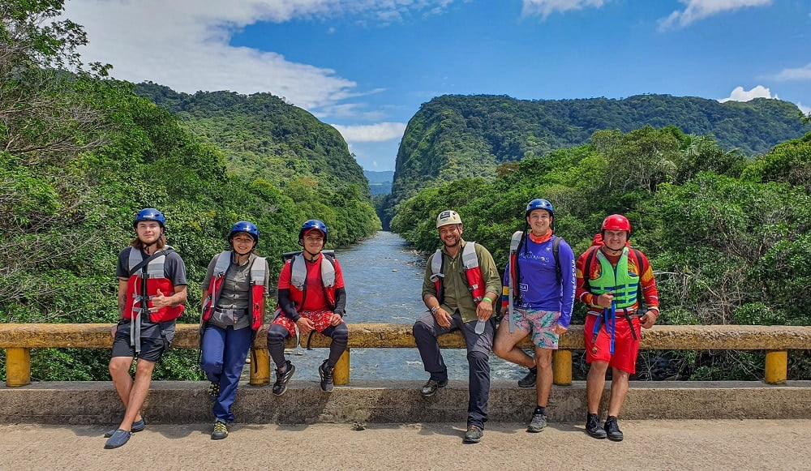
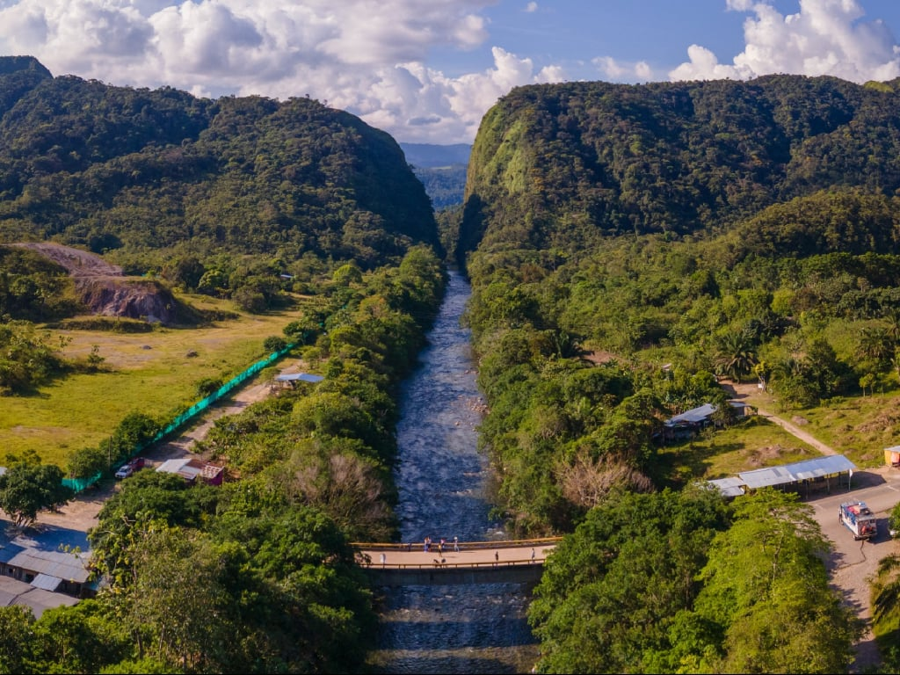
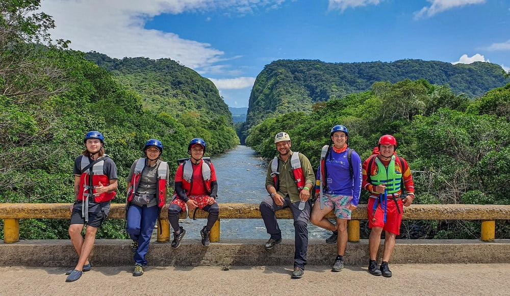
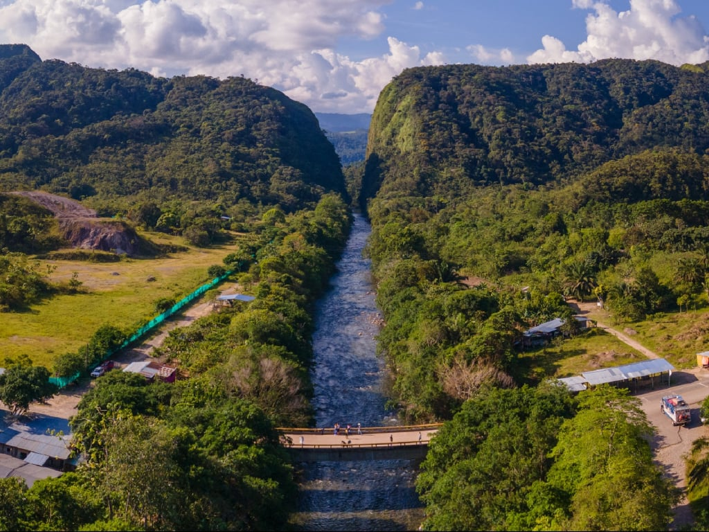

Portales del Fraguita
 



Los Portales del Fraguita son un impresionante ejemplo de la arquitectura natural de la región, donde la roca y la vegetación se fusionan en una obra maestra del paisaje. Este lugar invita a la contemplación y el disfrute de la naturaleza en su estado más puro. Ideal para realizar caminatas y exploraciones, los Portales del Fraguita ofrecen un espacio para conectarse con el entorno y disfrutar de momentos de tranquilidad en medio de la belleza natural.